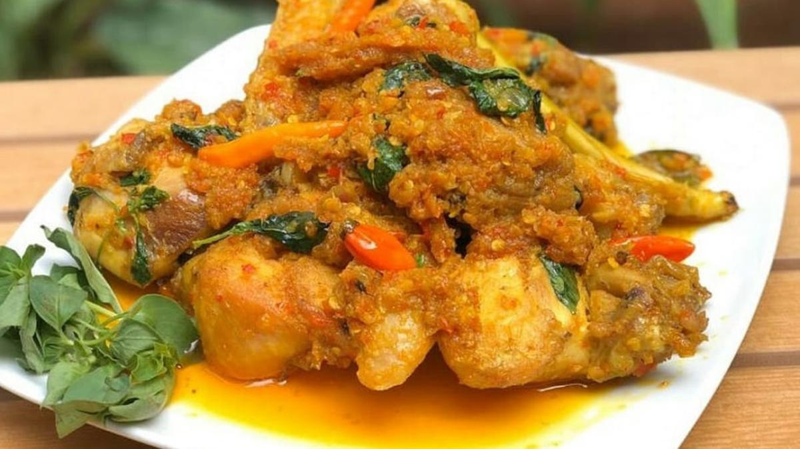
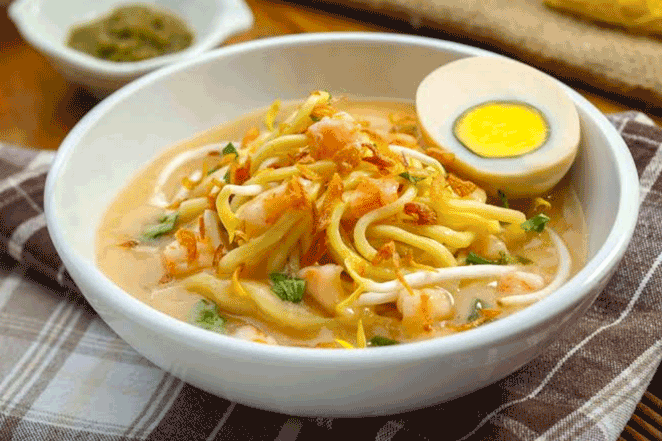

resep makanan
1.ayam woku

bahan
- 1 ekor ayam utuh buang kulitnya
- 2 sdm air jeruk nipis
- 1 sdt garam
- 2 sdm minyak
- 6 lembar daun jeruk
- 2 lembar daun kunyit
- 2 batang serai.iris tipis
- 2 buah tomat,potong dadu
- 2 batang daun bawang, iris tipis
- 750 ml air
- 1 sdm gula pasir
- 2 sdt royco kaldu ayam
- 2g daun kemangi
bumbu halus
- 12 butir bawang merah
- 5 siung bawang putih
- 4 buah cabai merah
- 6buah cabai rawit merah
- 2 butir kemiri,sangrai
- 2 cm kunyit
- 2 cm jahe
cara membuat
- bumbui potongan ayam dengan air jeruk nipis dan garam
- panaskan minyak tumis bumbu halus hingga harum. masukkan daun jeruk
- masukkan potongan ayam, aduk. masukkan air,gula dan royco kaldu ayam,aduk
- masak hingga air menyusut dan daging ayam matang.masukkan daun kemangi dan daun bawang.masak hingga daun kemangi layu
- angat dan sajikan
2.mie celor

bahan
- 250 gr udang ukuran sedang
- 250 ml santan kental
- 4 sdm kecap asin
- 4 sdm tepung terigu
- 1 sdt gula pasir
- 1 liter kaldu udang bumbu halus
- 2 sdm ebi, rendam dengan air hangat
- 8 butir bawang merah
- 5 siung bawang putih.1/2 sdt merica butiran
- 2 sdt garam pelengkap
- 200 gr mie kunig segar
- 1oo gr tauge seduh
- 2 butir telur rebus
- 5sdm bawang goreng
- 1 sdm daun seledri iris
- 2 sdm daun bawang iris
- jeruk limau
cara membuat
- kuah;kupas udang .sishkan kepala dan kulitanya . cincang idang dan sisishkan
- rebus dengan air untuk mandapat kaldu udang. gunakan api kecil dampau berubah kemerahan . kemudaian takar sebanya 1 liter dan saring kaliu ,sisihkan
- tumis bumbu halus samapai harum .masukkan potongan udang masak sampai udang berubah warna
- tuang kaldu udang santan kental dan ebi dauk hingga rata masak kuah sampai mendidih
- bumbu kecap asin .merica .garam dan gula
- larutkan tepung terigu danga sedikit air, tuangkan ke dalam rebusan kaldu
- masak hingga mengantal lalu angkat
- penyajian:taruh mie di pring saji ,beri tauge,telur rebus dan siram dengan kuahnya
- tabur seledri.bawang merah dan daun bawang
martabak telor mini
Bahan kulit:
Bahan isi:
- 200 gr daging giling
- 3 siung bawang putih, cincang halus
- 200 gr daun bawang, iris halus
- 3 butir telur ayam atau telur bebek
- 1/2 sdt merica
- 1,25 sdt garam atau kaldu bubuk sapi
Cara membuat:
Isi tumis bawang putih dan sampai harum. Tambahkan daging. Aduk hingga matang dan berbulir bulir, angkat
Aduk tumisan daging, daun bawang, telur, garam, dan merica bubuk
Ambil selembar kulit lumpia. Sendokkan bahan isi, lipat seperti amplop, rekatkan dengan telur
Panaskan minyak dalam wajan datar. Masukkan martabak. Goreng sampai matang sambil disiram minyak.